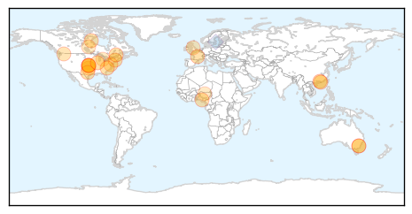

Influenza
30-Day Web Trend
0 alerts, 0 warnings

30-Day Twitter Trend
0 alerts, 0 warnings

Article Locations
Article Confidences
Top Articles:
- 1.000
- Berkshires experiencing 'rampant' outbreak of influenza
- 0.998
- News Scan for Jan 29, 2015
- 0.996
- Flu vaccine effectiveness study signals 'no protection' this year in Canada
- 0.996
- 58 Oklahomans have died from flu this season
- 0.994
- Flu cases drop; embattled vaccine may share credit
- 0.989
- This year's flu vaccine offered little or no protection in Canada: study
- 0.988
- Flu vaccine offered little or no protection
- 0.988
- One Case of Human Infection H7N9 Virus in China is Reported to WHO
- 0.987
- Should You Avoid Your Doctor's Office in Cold and Flu Season?
- 0.987
- Nine more people died from flu-related causes in N.C. last week bringing the total to 137 for the season
- 0.987
- Canadian is first human case of H7N9 bird flu confirmed in North America
- 0.981
- Swine flu recorded in France amid influenza outbreak - Panorama
- 0.969
- How to help make sure the flu doesn't sideline your business
- 0.941
- Oseltamivir reduced influenza symptoms, complications in adults
- 0.933
- H5N1 Bird Flu Spreads To More States In Nigeria
- 0.906
- No Scientific Evidence Flu Shots Work, Experts
- 0.859
- First case of bird flu found in county -- Hotline set up
- 0.790
- This year’s flu shot won’t help you
- 0.757
- UCSD team forecasts flu faster
- 0.730
- It’s flu season so remember to take care
- 0.703
- Influenza drug now hailed as effective
- 0.676
- Federal Government To Pay N145 Million Compensation To Poultry Owners
- 0.672
- Bird flu reported near Riverside
Top Tweets:
- 0.809
- antivirals important this flu season due to dominance of drifted influenza A(H3N2) virus. Full risk assessment: http://t.co/ZYMvlOAFjZ
Swine Flu
30-Day Web Trend
7 alerts, 3 warnings

30-Day Twitter Trend
0 alerts, 0 warnings

Article Locations

Article Confidences

Top Articles:
- 1.000
- 43 people in Delhi test positive for H1N1 virus
- 1.000
- the edge of knowledge
- 1.000
- 'Missing' swine flu patients scare Telangana government
- 1.000
- Swine flu death toll mounts in India’s Telangana state
- 0.999
- Govt. hospitals do their best to treat swine flu cases
- 0.999
- Three Swine Flu Deaths in One Day in Hyderabad
- 0.999
- Swine Flu Claims 4 More Lives in Hyderabad; 22 Test Positive
- 0.999
- People with swine flu symptoms to be tested for free, says Raje
- 0.999
- Two more die of swine flu in Rajasthan
- 0.998
- H1N1 claims one more life, Chief Minister orders free testing facility
- 0.998
- Seven Die of Swine Flu in Rajasthan, 19 Test Positive
- 0.998
- Five Delhi doctors tested positive for swine-flu virus
- 0.997
- Health Department stocks up Tamiflu pills
- 0.995
- Health officials huddle up after swine flu infects 41, kills 7 in Haryana
- 0.992
- In One Month, Rajasthan Records 27 Swine Flu Deaths
- 0.992
- Two more die of swine flu
- 0.990
- Andhra Pradesh Reports 2 Swine Flu Deaths, 24 Cases
- 0.986
- As Swine Flu Cases Rise in Rajasthan, Chief Minister Holds Emergency Meeting
- 0.986
- Two more test positive in Lucknow, H1N1 cases up to 13
- 0.985
- Medical officers to be deployed in Raj to check swine flu
- 0.984
- Ganta wants publicity on swine flu
- 0.981
- Affordable swine flu vaccine that never made it
- 0.972
- One more swine flu case in Lucknow; total reaches 12
- 0.972
- With 2 new patients, Lucknow sees 12 swine flu cases
- 0.968
- Two suspected swine flu deaths in Indore
- 0.962
- Malaysian national admitted with swine flu symptoms in Tiruchi
- 0.958
- Swine Flu Claims 2 Lives in Lucknow
- 0.809
- Swine Flu Claims 2 Lives in Indore
- 0.776
- Two women die of swine flu in Hyderabad, toll at 34
- 0.586
- After Panic Call to PM Modi, Centre Sends Two Special Teams to Hyderabad to Tackle Swine Flu
Top Tweets:
-
No tweets found for Jan 29, 2015